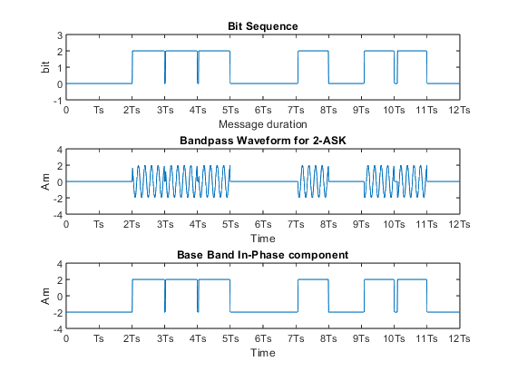

clc;
clear all;
Ts=0.001;
fc=5000;
bitl=12;
M=2;
Am=2;
bit_s=zeros(1,bitl);
for ib=1:bitl
if rand<0.5
bit_s(ib)=0;
else
bit_s(ib)=1;
end
end
bit_len=length(bit_s);
t=0:0.00001:(bit_len*Ts);
bpw=Am*cos(2*pi*t*fc);
bit_mat=[];
bit_exp=[];
for i=1:bit_len
for j=i:1:(length(t)-1)/bit_len
bit_exp(j)=bit_s(i);
end
bit_mat=[bit_mat bit_exp];
bit_exp=[];
end
bit_mat=[bit_mat 0];
x=bit_mat.*bpw;
base_band_in_phase=[];
for i=1:length(bit_mat)
if(bit_mat(i)==0)
base_band_in_phase=[base_band_in_phase (-1)*Am];
else
base_band_in_phase=[base_band_in_phase Am];
end
end
subplot(3,1,1);
plot(t,Am*bit_mat);
axis([0 (bit_len*Ts) -1 3]);
xlabel('Message duration');
ylabel('bit');
title('Bit Sequence');
xticks([0:Ts:(bit_len*Ts)])
xticklabels({'0','Ts','2Ts','3Ts','4Ts','5Ts','6Ts','7Ts','8Ts','9Ts','10Ts','11Ts','12Ts','13Ts','14Ts','15Ts','16Ts'})
subplot(3,1,2);
plot(t,x)
axis([0 (bit_len*Ts) -4 4]);
xlabel('Time');
ylabel('Am');
title('Bandpass Waveform for 2-ASK');
xticks([0:Ts:(bit_len*Ts)])
xticklabels({'0','Ts','2Ts','3Ts','4Ts','5Ts','6Ts','7Ts','8Ts','9Ts','10Ts','11Ts','12Ts','13Ts','14Ts','15Ts','16Ts'})
subplot(3,1,3);
plot(t,base_band_in_phase);
axis([0 (bit_len*Ts) -4 4]);
xlabel('Time');
ylabel('Am');
title('Base Band In-Phase component');
xticks([0:Ts:(bit_len*Ts)])
xticklabels({'0','Ts','2Ts','3Ts','4Ts','5Ts','6Ts','7Ts','8Ts','9Ts','10Ts','11Ts','12Ts','13Ts','14Ts','15Ts','16Ts'})
